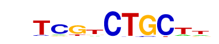

| p-value: | 1e-30 |
| log p-value: | -6.936e+01 |
| Information Content per bp: | 1.631 |
| Number of Target Sequences with motif | 124.0 |
| Percentage of Target Sequences with motif | 7.62% |
| Number of Background Sequences with motif | 984.7 |
| Percentage of Background Sequences with motif | 2.15% |
| Average Position of motif in Targets | 49.7 +/- 21.3bp |
| Average Position of motif in Background | 51.4 +/- 34.5bp |
| Strand Bias (log2 ratio + to - strand density) | 10.0 |
| Multiplicity (# of sites on avg that occur together) | 1.02 |
| Motif File: | file (matrix) reverse opposite |
| Rank | Match Score | Redundant Motif | P-value | log P-value | % of Targets | % of Background | Motif file |
| 1 | 0.959 |  | 1e-26 | -61.218930 | 4.79% | 0.99% | motif file (matrix) |
| 2 | 0.947 | 1e-25 | -58.822713 | 3.50% | 0.52% | motif file (matrix) | |
| 3 | 0.941 | 1e-23 | -54.440336 | 5.10% | 1.26% | motif file (matrix) | |
| 4 | 0.893 | 1e-22 | -52.490844 | 2.40% | 0.24% | motif file (matrix) | |
| 5 | 0.891 | 1e-19 | -44.831349 | 6.45% | 2.23% | motif file (matrix) | |
| 6 | 0.815 | 1e-14 | -33.064610 | 6.76% | 2.89% | motif file (matrix) | |
| 7 | 0.808 | 1e-13 | -31.133736 | 7.56% | 3.51% | motif file (matrix) | |
| 8 | 0.648 | 1e-11 | -26.965533 | 0.98% | 0.07% | motif file (matrix) | |
| 9 | 0.712 | 1e-9 | -21.754818 | 1.17% | 0.16% | motif file (matrix) |